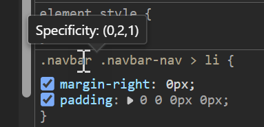
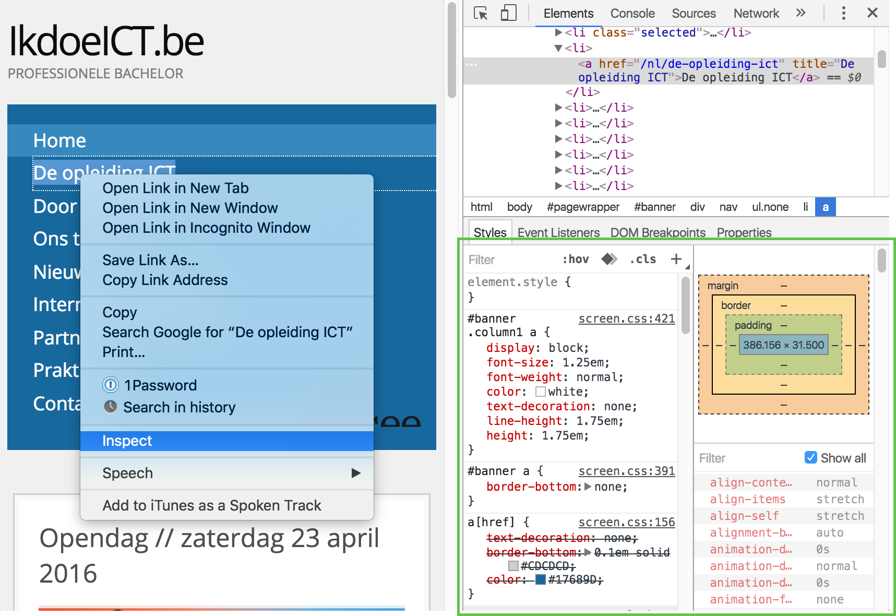
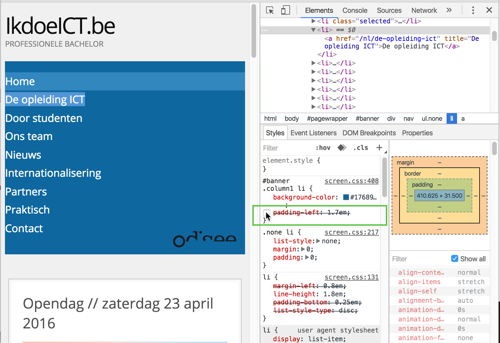
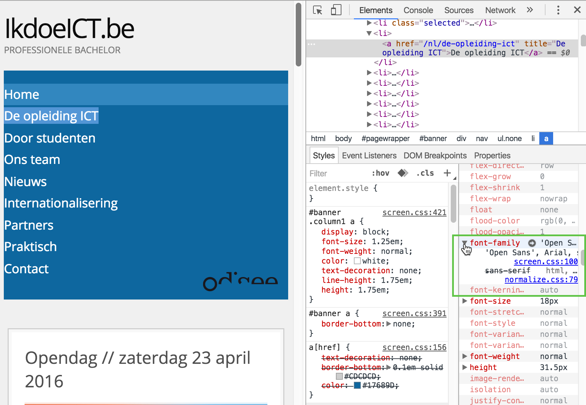
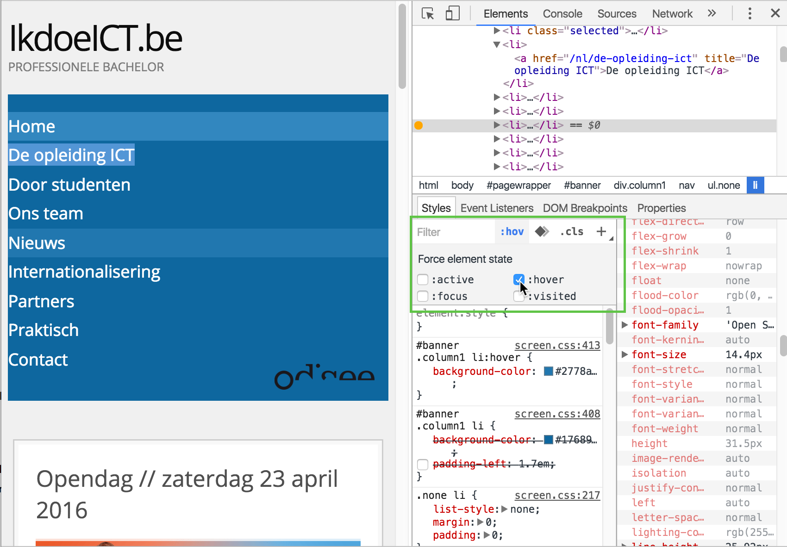
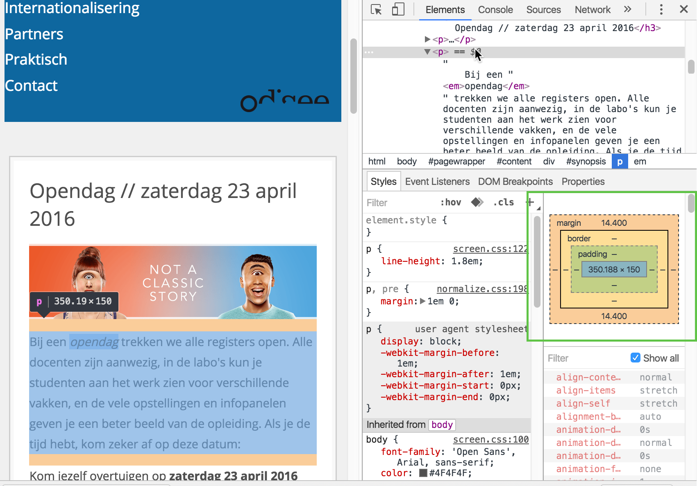
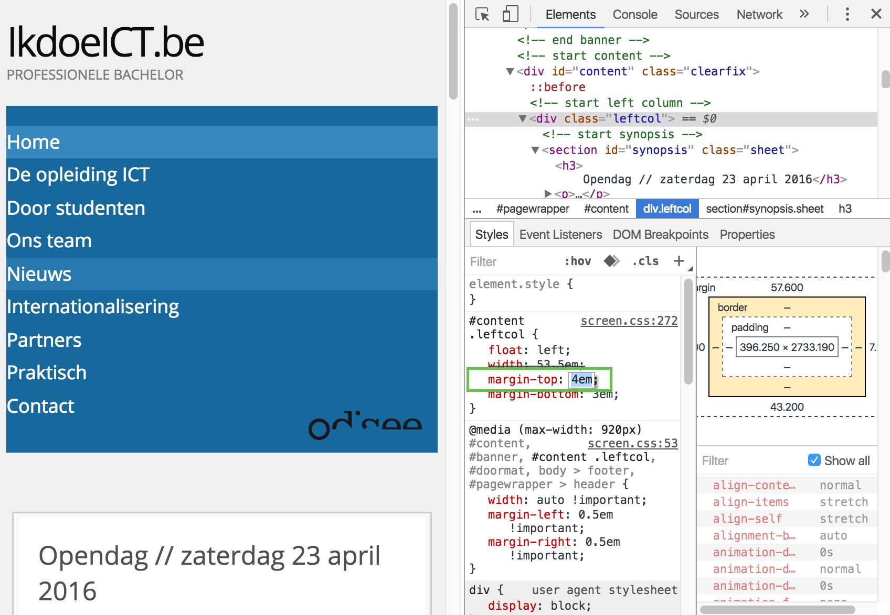
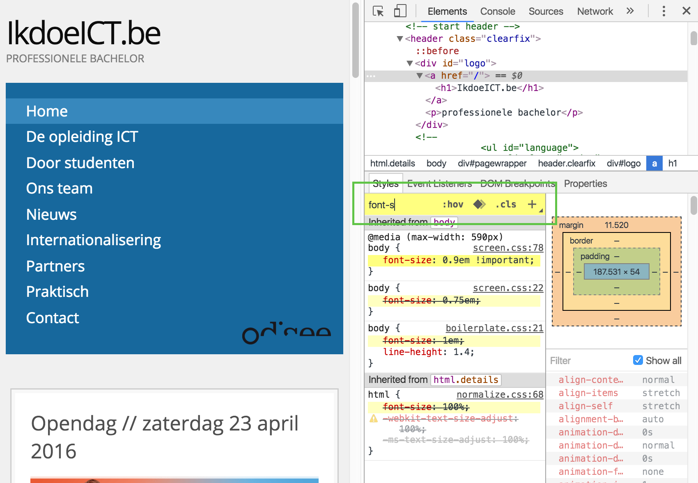
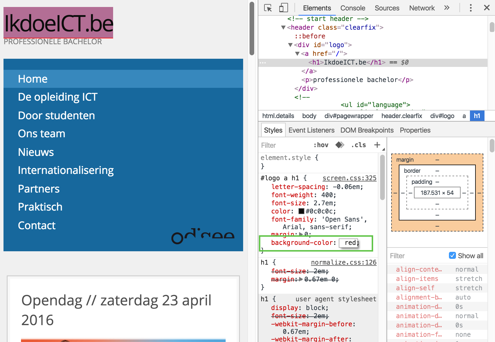

Stylesheets
CSS stijlregel
CSS of Cascaded Style Sheets bestaat in essentie uit een opsomming van stijlregels met opmaak en layout. Elke stijlregel bestaat uit een selector, een property en een waarde:
selector {
property: value;
}Voorbeeld:
p {
color: black;
}→ dit selecteert alle paragrafen, en zet de tekstkleur in zwart
CSS stijlen koppelen aan HTML
inline
Je kan in theorie stijlen inline toevoegen, dus rechtstreeks in je HTML, via het style attribuut:
...
<body style="background-color: #f7ba5a">
<p style="font-size: 18px; margin-left: 20px">
...
→ er is totaal geen scheiding tussen HTML en CSS code
→ gebruik van inline stijlen is verboden in deze cursus!
intern
Je kan stijlen in theorie ook intern toevoegen in een <style> blok in de <head>:
...
<head>
...
<style>
p {
font-size: 18px;
margin-left: 20px
}
body {
background-color: #f7ba5a;
}
</style>
</head>
...
→ de scheiding van HTML en CSS code is al beter, maar ze staan nog steeds in hetzelfde codebestand
→ gebruik interne stijlen is verboden in deze cursus!
extern
De beste methode is een apart CSS bestand of stylesheet linken aan je HTML document:
...
<head>
...
<link rel="stylesheet" href="css/styles.css">
...
</head>
...Het gelinkte CSS bestand bevat dan de CSS code:
p {
font-size: 18px;
margin-left: 20px;
}
body {
background-color: #f7ba5a;
}
→ dit is de juiste manier om CSS te koppelen aan je HTML
→ extern gekoppelde CSS is verplicht in deze cursus!
meerdere stylesheets
Je kan zoveel stylesheets linken als je wil:
...
<head>
...
<link rel="stylesheet" href="css/common.css">
<link rel="stylesheet" href="css/site.css">
<link rel="stylesheet" href="css/home.css">
...
</head>
...→ dit laat toe je CSS te organiseren in meerdere bestanden
media types
Je kan stijlen definiëren voor verschillende media, bv. voor schermen of printers (maar er zijn nog veel andere mogelijkheden: scherm resoluties, oriëntatie, aspect ratio...) Een typische use case is aparte stijlen voor de printversie, waar b.v. ingewikkelde kleuren, achtergronden e.d. niet gewenst zijn:
...
<head>
...
<link rel="stylesheet" href="..."><!-- alle media types -->
<link rel="stylesheet" href="..." media="print"><!-- enkel printers -->
<link rel="stylesheet" href="..." media="screen"><!-- enkel schermen -->
...
</head>
...CSS commentaar
Commentaar in CSS wordt tussen /* en */ geplaatst:
/**
* Main styles
*
* @author Rogier van der Linde
*/
p {
color: black; /* alle paragrafen zwart */
}CSS code layout
Een goede CSS begint bij een degelijke layout:
- elke property op aparte regels
- degelijke indentatie
- een spatie na elk dubbelpunt
- een open regel na elk blok
- properties alfabetisch gesorteerd
p { line-height:1.3; color: #333 }
.box {
background-color: #666;
font-size: 12px;
padding: 10px 20px;
}
@media (min-width: 800px) {
.box {
padding: 0;
}
}
p {
color: #333;
line-height: 1.3;
}
.box {
background-color: #666;
font-size: 12px;
padding: 10px 20px;
}
@media (min-width: 800px) {
.box {
padding: 0;
}
}Om de code correct te layouten in VS Code, gebruik Shift-Alt-F (installeer de CSS formatter extensie)
Selectors
Voor een samenvattend overzicht zie de CSS cheatsheet
elementen selecteren
Selecteer elementen op basis van tagnaam, class- of id attribuut, of alle:
p {
/* tag selector; selecteert <p> */
}
.message {
/* class selector; selecteert <... class="message"> */
}
.message.error {
/* multiple class selector; selecteert <... class="message error"> */
}
#lnk-login {
/* id selector; selecteert <... id="lnk-login"> */
}
* {
/* universele selector; selecteert alle elementen */
}
→ een id attribuut moet uniek zijn, dus een id selector kan maar één element selecteren
→ een class attribuut hoeft niet uniek te zijn, dus deze selector kan meerdere elementen selecteren
element toestand
Selecteer elementen in een bepaalde toestand:
a:hover {
/* selecteert hovered link */
}
textarea:focus {
/* selecteert focused <textarea> */
}
input[type=radio]:checked {
/* selecteert checked radiobuttons */
}→ men noemt dit ook pseudo-class selectoren; ze selecteren een heel element en worden voorafgegaan door een enkele dubbelpunt ‘:’
element deel
Selecteer een deel van een element:
a::first-letter {
/* selecteert de eerste letter van <a> */
}
::selection {
/* selecteert het deel geselecteerd door de gebruiker */
}
li::before {
content: url(../img/bullet.png); /* injecteer aan het begin een afbeelding */
/* meer properties van de nieuwe content */
}
li::after {
content: "some text"; /* injecteer aan het einde tekst */
/* meer properties van de nieuwe content */
}→ men noemt dit ook pseudo-element selectoren; ze selecteren een deel van een element en worden voorafgegaan door een dubbel dubbelpunt ‘::’
voorbeeld: ::before en ::after
Een voorbeeld met injectie van 👉 en 👈 aan het begin en einde list items:
<ul>
<li>item 1</li>
<li>item 2</li>
<li>item 3</li>
</ul>li {
list-style: none; /* verwijder standaardbullets */
}
li::before {
content: "👉";
font-size: 12px;
margin-right: 5px;
}
li::after {
content: "👈";
font-size: 12px;
margin-left: 5px;
}element positie
Specifieer de positie van een element:
h1 + p {
/* selecteert <p> direct volgend op een <h1> */
}
li:first-child {
/* selecteert een <li> die de eerste child is van zijn parent */
}
#content > section {
/* selecteert <section> direct genest in <... id="content"> */
}
element attribuut
Selecteer elementen op basis van attribuut:
select[multiple] { ... } /* "heeft", b.v. <select multiple> */
input[type=button] { ... } /* "is", b.v. <input type="button"> */selectors combineren
Combineer selectors:
p.message {
/* tag-class selector; selecteert <p class="message"> */
}
nav#mainmenu {
/* tag-id selector; selecteert <nav id="mainmenu"> */
}
#mainmenu.open {
/* id-class selector; selecteert <... id="mainmenu" class="open"> */
}selectors groeperen
Groepeer verschillende selectors met dezelfde stijlen in een komma-lijst:
input {
color: blue;
}
#mainmenu a:hover {
color: blue;
}
p.formpar {
color: blue;
}input, #mainmenu a:hover, p.formpar {
color: blue;
}selectors nesten
Een spatie betekent genest in (lees van rechts naar links):
#leftcol p {
/* paragrafen genest in het element met id="leftcol" */
}
nav li.active a {
/* links genest in list items met class="active" genest in nav element */
}Properties
Property lijst
Stijlen bestaan uit lijsten property - waarde paren:
selector {
property_1: waarde_1;
property_2: waarde_2;
property_3: waarde_3;
...
}Voorbeeld:
p {
color: red;
font-size: 10px;
margin-bottom: 6px;
}properties groeperen
Sommige gerelateerde properties kunnen gegroepeerd worden in een enkele waarde. Beide fragmenten zijn b.v. gelijk:
body {
background-image: url(../img/bg.jpg);
background-position: right;
background-repeat: repeat-y;
}
.box {
margin-top: 6px;
margin-right: 25px;
margin-bottom: 9px;
margin-left: 15px;
}
body {
background: url(../img/bg.jpg) repeat-y right; /* image, repeat, position */
}
.box {
margin: 6px 25px 9px 15px; /* top, right, bottom, left */
}
propertywaarden met spaties
Rond propertywaarden met spaties moeten quotes staan om verwarring te vermijden:
p {
font-family: Arial, Verdana, "sans serif";
}→ rond andere waarden zijn quotes niet nodig:
body {
background-image: url(img/bg.jpg);
}Prioriteit, specificiteit en overerving
De uiteindelijke stijl van een element wordt bepaald door verschillende factoren:
- het element kan matchen met verschillende selectoren
- stijlen kunnen meermaals gedefinieerd zijn in meerdere bestanden
- sommige stijlen kunnen overerven van de parent (b.v. lettertype)
- stijlen hebben standaardwaarden afhankelijk van de gebruikte browser
De "winnende" stijl wordt bepaald door (in volgorde, prioriteit van hoog naar laag):
- stijlen gemarkeerd met
!important - inline stijlen gedefinieerd in het
styleattribuut - het gewicht of de specificiteit van de selector (zie verder)
- de positie van de CSS regel
- stijlen overgeërfd van de parent (zie verder)
- defaultwaarde van de browser
specificiteit berekenen
De specifiteit is een getal dat wordt berekend door optelling van de verschillende soorten selectoren. De berekening is redelijk complex, maar als je alleen tag-, class- en id-selectoren hebt is de berekening als volgt:
- aantal id selectoren x 100
- aantal class selectoren x 10
- aantal tag selectoren x 1
Enkele voorbeelden:
| selector | berekening | specificiteit |
|---|---|---|
p |
0 - 0 - 1 | 1 |
p.test |
0 - 1 - 1 | 11 |
p.test1.test2 |
0 - 2 - 1 | 21 |
#navbar p#demo |
2 - 0 - 1 | 201 |
Je kan de specificiteit trouwens inspecteren met je browser tools:

voorbeeld
<div class="container">
<p>gewone tekst</p>
<p class="message" style="color: orange;">belangrijke mededeling</p>
<p class="message">gewone mededeling</p>
<p id="special" class="message">speciale mededeling</p>
<p class="override message" style="color: yellow;">uitzonderlijke mededeling</p>
</div>
.container {
color: brown;
}
.message {
color: blue; /* specificiteit: 0-1-0 */
font-size: 12px; /* specificiteit: 0-1-0 */
}
.container .message {
color: green; /* specificiteit: 0-2-0 */
font-size: 28px; /* specificiteit: 0-2-0 */
}
#special {
color: red; /* specificiteit: 1-0-0 */
}
.override {
color: purple !important; /* specificiteit: 0-1-0 + !important */
font-size: 10px !important; /* specificiteit: 0-1-0 + !important */
}De uiteindelijke stijl van elk element:
| element | lettergrootte | kleur |
|---|---|---|
| gewone tekst | 16px: browser default |
brown: overgeërfd van container |
| belangrijke mededeling | 28px: .container .message selector |
orange: style attribuut |
| gewone mededeling | 28px: .container .message selector |
green: .container .message selector |
| speciale mededeling | 28px: .container .message selector |
red: #special selector |
| uitzonderlijke mededeling | 12px: !important |
purple: !important |
inspecteren in de browser
Er zijn twee plaatsen in de inspector waar je kan achterhalen hoe een stijl tot stand gekomen is, n.l. Styles en Computed. Je vindt telkens de winnende stijl bovenaan:
Browser inspector gebruiken
CSS inspecteren
Inspecteer een element en bekijk de CSS eigenschappen:
Stijl uitschakelen
Schakel stijlen tijdelijk in en uit met de checkboxes:
Toegepaste stijlen inspecteren
Ontdek welke stijl uiteindelijk van toepassing is, en waarom:
Element state inschakelen
Schakel element states als hover en focus in:
Box model inspecteren
Bekijk afmetingen en diktes van border, margin en padding:
Andere waarde uitproberen
Experimenteer door andere property waarden uit te proberen:
Properties filteren
Vind snel een property via het zoekvenster:
Stijlregel toevoegen
Experimenteer door nieuwe stijlregels toe te voegen:
HTML node verwijderen
Debug een fout door een HTML node tijdelijk te verwijderen: